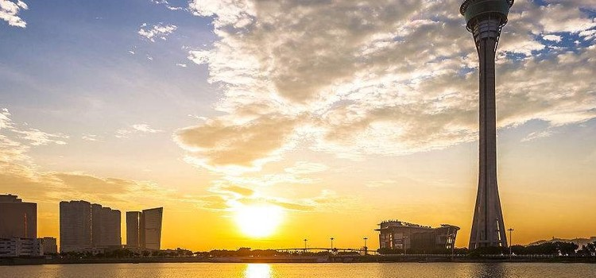

著名景點
#澳門塔#
澳門旅遊塔會展娛樂中心，集觀光、美食、商務和冒險運動於一體的澳門新地標。塔樓高338米，是全球排行第10高的獨立塔樓，璀璨的夜景不容錯過。澳門塔較低樓層內有3D影院、雲集超過30個國際名牌的義莎精品店、小朋友的最愛的玩具反斗城。

圖：澳門塔
58樓是主要觀景台，這一層地面由特殊玻璃製成，可透過玻璃向下瞧，非常刺激！這裡視野開闊，許多澳門好看的俯視圖照片就在這裡拍攝的。 59樓是“180°空中酒吧”，可以在這裡品酒觀景，聚會小憩。
要是想品嚐美食的話，往上再走一層到位於60樓的360°旋轉餐廳，靠玻璃窗的座位區會圍繞中心以順時鐘方向旋轉，大約40分鐘一圈，如果天氣晴，則可遍覽澳門美景。
61樓是澳門塔的精彩所在，各種極限刺激運動都在這一層！比如有名的“笨豬跳”、“高飛跳”、“空中漫步”、“百步登天”等，“笨豬跳”是從233米的高空躍下，感受4-5秒瘋狂下墜的快感！ “空中漫步”在只有1.8米寬並且沒有扶手的露天鋼架上“漫步” 。 “百步登天”將會站在離地面338米高的塔頂，徒手攀上100米的高的垂直梯子，喜歡刺激的遊客千萬不可錯過
網站：https://www.macautower.com.mo/
地址：澳門南灣新填海區D區域1號地段
前往方式：26路和9A路公交車
#大三巴牌坊#
大三巴牌坊是澳門的標誌性建築物之一，2005年作為澳門歷史城區的一部分，成為聯合國世界文化遺產。此教堂糅合了歐洲文藝復興時期與東方建築的風格而成，體現出東西藝術的交融，雕刻精細，巍峨壯觀。
1602年起，葡萄牙人耗時30多年建造了一座哥特式教堂，名為聖保祿教堂，由於它的名字發音接近當地方言的“三巴”，也被稱作大三巴教堂，建築糅合了歐洲文藝復興和東方建築的風格，是由意大利神父設設計，日本工匠協助完成的。
教堂雕刻精細，光是前壁就造價三萬兩白銀。大三巴前後經歷過三次大火，1835年的那場火災足足焚燒了2個多小時，整體建築付諸一炬，前壁卻屹立不倒，大火後因其貌似中國牌坊得名“大三巴牌坊”。
大三巴共分為五層，從上到下都鑲嵌、雕刻著形態迥異、基督教色彩濃厚的藝術群像。大三巴牌坊後的聖保祿教堂遺址地下，還設有天主教藝術博物館與墓室，其中博物館內陳列著珍貴的天主教題材繪畫、雕塑等作品，皆是從澳門各教堂中精挑細選出來的，而墓室內則安葬著各國殉教者遺骨。
地址：澳門特別行政區花王堂區砲台山下
前往方式：新勝街站（停靠路線：17）、白鴿巢總站（停靠路線：17）、白鴿巢公園站（停靠路線：8a、18、18a、19及26）

圖：大三巴牌坊
#大砲台#
大砲台的正式名稱為聖保祿砲台，位於大三巴牌坊附近，是中國現存最古老的西式砲台建築群之一。澳門砲台眾多，大砲台是當時澳門防禦系統的核心，佔地約一萬平方米。大砲台附近有澳門博物館 （15澳門元，週二-週日10：00-18：00），從歷史和文化角度展示澳門數百年間的變遷。
地址：澳門半島中央柿山（砲台山）山頂
前往方式：乘坐8A、18、18A、19、26路到白鴿巢前地或乘17路到白鴿巢總站南行花王堂街、大三巴街；乘坐2、3、3A、 3X、5、 7、10、10A、11、18、21A、26A、33路到新馬路，沿大街北行。
圖：澳門大砲台
#威尼斯人度假酒店#
澳門威尼斯人度假酒店，是澳門的著名景點，它集酒店、博彩、會展、購物、體育、綜藝及休閒設施於一體的綜合性場所，是來澳門遊客的必遊之地。
酒店以水都威尼斯為主題，內部佈滿威尼斯特色拱橋、小運河及石板路，充滿意式浪漫狂放的異國風情。這裡有亞洲最豪華的套房、大運河購物區、水療中心。更擁有世界賭桌數量最多的博彩大廳。
威尼斯人酒店的特點是沒有標間，只有套房，每間套房的面積約70多平米，一晚的價格人民幣1500元左右。即使你不選擇這裡入住，也可以來此血拼和遊戲一把。
澳門威尼斯人度假酒店極盡奢華，到處金碧輝煌，國際娛樂場分佈在不同的樓層，每個娛樂場區都有很多遊戲桌，娛樂場不能使用人民幣，需在櫃檯處兌換籌碼，最小面值從幾十元到200元不等，最大面值可以到達驚人的200萬元。其中玩法也有很多種，你都可以來過把癮。
地址：澳門望德聖母灣大馬路，路氹金光大道
前往方式：乘坐公交MT4至新城大馬路/威尼斯人站
圖：威尼斯人度假酒店
#官也街#
官也街是澳門著名的手信街，政府將狹窄道路加以裝飾，大量餐廳、甜品店、手信店在這裡集中，是新興的著名景點之一。不要小看了這條只有約115米長，5米寬的小街，人氣最旺的莫過於鉅記餅家，咀香園，晃記餅家這些老字號餅屋，杏仁餅、鳳凰卷、紐結糖、薑糖、老婆餅、肉切酥、雞仔餅、牛耳朵等等在這裡應有盡有。
官也街也有各種美食，誠昌飯店的水蟹粥，莫義記的雪糕很值得品嚐，很多港澳明星來這裡經常去光顧。從官也街繞到巴波沙總督前地，能找到好吃的大利來記豬扒包，肉香多汁，咬起來非常鬆軟。
官也街另一頭是古老的氹仔市集舊址，往前途徑北帝廟，這座廟160多年的歷史，小小的兩三間屋供奉著金花娘娘、華光天王、關聖大帝、財帛星君及魯班先師等神祇。
每年的北帝誕，在廟外的空地都會搭上戲棚演神功戲，又有燒香酬神等賀誕活動一連數晚在舉行，熱鬧非常。
地址：澳門氹仔南部市區中心
前往方式：搭乘11、15、22、28A、30、33、34路公交車在氹仔官也街站下車
圖：官也街
#議事亭前地#
議事廳前地是澳門民政總署大樓前的廣場，面積約3，700平方米，是澳門四大廣場之一。廣場四周坐落多座百年曆史的葡式老建築，廣場黑白相間的波浪地面和中央的噴水池更添南歐風情，這裡是遊客的必到之處。
澳門每逢重大節慶，經常會在議事亭前地舉辦活動。例如澳門民署每年6月都要舉辦“澳門荷花節”，活動開幕時會有3000盆共有60多個品種的荷花，分別在氹仔龍環葡韻、議事亭前地及盧廉若公園等地競相綻放，如果是6月份來這裡應該就可以碰到。
地址：澳門亞美打利庇盧大馬路（民政總署總部對面）
前往方式：
1. 乘坐2、3、3A、3X、5、7、10、10A、11、18、21A、26A、33路公車到新馬路/營地大街（西行）。
2. 乘坐3、4、6、8A、18A、19、26A、33路公車到新馬路（東行）。
3. 乘坐2、3A、5、7、10、10A、11、21A路到金碧文娛中心（東行）
圖：議事亭前地
#媽閣廟#
澳門著名的古蹟之一，俗稱天后廟。背山面海，沿崖建築，古木參天，規模雖小卻能充分融合自然，佈局錯落有致，是一座有中國文化特色的古建築。
廟門口有一對石獅，雕工精美，形態逼真；廟內花木錯落，岩石縱橫，景色清幽，常年香火旺盛。遊客一入廟即可看到紫煙瀰漫，許多巨大的盤香高高懸掛著，一排排甚有氣勢，形成了廟裡的一大景觀。
媽閣廟供奉的是媽祖娘娘，是海上的保護神，每年春節和農曆3月23日媽祖寶誕，媽閣廟香火至為鼎盛。除夕午夜開始，不少善男信女紛紛到來拜神祈福，廟宇內外一片熱鬧。
地址：澳門半島南端媽閣山西麓
前往方式： 過媽閣廟的線路有2路，5路，6路環線，7路，N3路夜班公交線路
圖：媽閣廟
#黑沙海灘#
黑沙灘是澳門著名的天然海浴場。黑色的細沙是由海洋特定環境形成的黑色次生礦海綠石所致。 “海綠石”受海流影響，被搬運至近岸，再經風浪攜帶到海灘，使原來潔白明淨的白沙灘，變成迷人神秘的黑沙灘。另一個奇特之處在於，它左右不遠處海灘上的沙都不是黑色的，惟有這一塊半月形海灘的沙子是黑色的。
這里海灣呈半月形，坡度平緩，灘面廣闊，附近有黑沙公園、燒烤攤、葡國餐館、車站，較為便利，夜晚星空和東方日出也是難得的美景。不過，近年來因為水土流失，黑沙灘的面積逐漸縮小，當地用黃色的新沙補充海灘，以至於原有的黑色海沙大部分被覆蓋。
沙灘附近有環境清幽的酒店和黑沙公園，若是在夜晚來到黑沙灘，有機會看到漂亮的星空。此外，這裡還可觀賞日出、進行各項水上運動。玩累了還可以在沙灘上的燒烤攤或者不遠處的葡國餐廳，放鬆休息，享受美食。
地址：澳門路環島的東面
前往方式： 酒店附近乘任何可以到葡京的巴士，到葡京換21A/25/26A都可以到黑沙海灘。或者酒店附近乘28A到氹仔再換21A/25/26A
圖：黑沙海灘
#玫瑰聖母堂#
玫瑰聖母堂坐落於大三巴牌坊附近，已有400多年的歷史。早期用木板搭建因此也成為“板樟堂”，火災後改為現在的磚石結構。因為供奉“玫瑰聖母”，所以稱為玫瑰聖母堂，澳門最美教堂之一。
教堂正面上方刻有多明我會的徽號，米黃色和白色的外觀，加上小清新的綠色門窗，精緻的雕刻花紋，參觀者可先按門鈴，然後經旁邊閘門進入，再繞過一條長廊便可進入聖堂內部，這里安靜得能聽見老風扇轉動的嗡嗡聲。
1929年起，天主教澳門教區主敎批准把花地瑪聖母像供奉在玫瑰堂中，讓信徒敬奉，此後每年的5月13日下午，都會舉行盛大的聖像巡遊，澳門為數不多的天主敎節日活動，極具特色。
聖堂後的鐘樓已改建成一間小博物院，珍藏了近300件宗教藝術品，有彌撒常用的金銀銅器具；有木材、石膏、象牙制的聖像；有細膩的油畫和有關聖經故事的板畫；有彩印的圖案和神父用的絲織祭衣；其中名為《聖奧斯丁》的油畫有三百多年的歷史。遊客可通過這批珍貴的文物了解天主教在亞洲的發展史。
地址：澳門半島板樟堂街前地
前往方式： 乘坐公交2、3、3A、3X、5、7、10、10A、11、18、21A、26A、33、N1B、N3至新馬路/營地大街站下，沿大街步行3分鐘至米糙巷即可
圖：玫瑰聖母堂
私房景點
#澳門歷史城區#
從舊城牆遺址下看哪吒廟與大三巴牌坊澳門歷史城區（舊稱澳門歷史建築群），是由22座位於澳門半島的建築物和相鄰的8塊前地所組成的一個舊城區。於2005年7月15日的第29屆世界遺產委員會會議上，澳門歷史城區獲得21個成員國全體一致通過，正式被列入世界文化遺產名錄內
澳門歷史城區保存了澳門四百多年中西文化交流的歷史精髓。它是中國境內現存年代最遠、規模最大、保存最完整和最集中，以西式建築為主、中西式建築互相輝映的歷史城區；是西方宗教文化在中國和遠東地區傳播歷史重要的見證；更是四百多年來中西文化交流互補、多元共存的結晶。
位置：澳門澳門半島
前往方式： 3A.金碧文娛中心站下車。新口岸/柏嘉街站 上車 N1A水上街市站 下車
圖：澳門歷史城區
#水舞間#
節目籌劃5年、總投資超過20億港元，全球最大型的水上匯演“水舞間”（The House of Dancing Water）15日晚間在澳門新濠天地水舞間劇院揭幕，14日舉行紅地毯儀式，從15日起在新濠天地水舞間劇院正式公演。
“水舞間”水上匯演由新濠博亞娛樂有限公司聯席主席兼行政總裁何猷龍先生精心打造，全球最偉大的靈感創作大師佛朗哥·德拉戈先生親自創作和執導，水上匯演耗資巨大，經過了五年的籌劃和兩年的排練才得以和觀眾見面。 “水舞間”已成為遊澳門的必看節目之一，深受遊客歡迎。
目前已有超過1，500，000觀眾親身體驗《水舞間》，為了打造這齣空前巨制，新濠天地特別興建備有頂尖科技器材的劇院，可容納2000名觀眾，其舞台泳池容量破紀錄地高達370萬加侖（約合1682萬公升），相等於5個奧林匹克標準泳池的容量。
這個超越拉斯維加斯製作的驚世匯演，將帶您進入前所未見的視覺震撼新里程。立即蒞臨澳門新濠天地，親身一睹這個世界頂級巨鑄－《水舞間》
地址：澳門路氹連貫公路新濠天地
前往方式：108路、8路、102路、2路、3路、105路、10路、11路、7路、103路、9路等
圖：水舞間
#新濠天地皇冠度假酒店#
澳門首間皇冠酒店坐落於氹仔宋玉生博士圓形地，是澳門第一家以六星級酒店標準所建造的五星級酒店，於2007年5月9日試業，並於2007年5月12日舉行開幕典禮，當時邀請了國際著名影星周潤發擔任酒店代言人。當時的皇冠酒店乃是全氹仔最高之建築物，酒店大樓高約160米，共36層，總建築面積106，000平方米。
酒店設有多項休閒及娛樂設施，包括娛樂場、各式餐廳及水療中心等。 2009年新濠天地落成，項目中包含了新的皇冠酒店，因此該皇冠酒店於2009年上半年易名為“新濠鋒酒店”。
“漾日”水療中心位於皇冠度假酒店三樓，提供各種國際美容與健康療法：美容、裹身、個人化按摩、水療、美甲、修足、香薰療法、排毒療法、美容美髮療程等等，應有盡有。設施包括室外溫水泳池，風景如畫的花園，還有八間設計獨特的水療室，活力泳池、蒸桑拿室、按摩室、健身中心、個人護理中心和茶點吧等
地址：澳門路氹城澳門路氹連貫公路
電話：00853-88686888
圖：新濠天地皇冠度假酒店
#澳門城市大學#
澳門大學位於氹仔島，建在海邊的山上，可以坐公交11、30、35、37、37U、N2，停在山腳下，爬10min就可以到學校。這裡應該說是澳門大學的舊址，現在是澳門城市大學，澳門大學已經遷走了。
整個澳門城市大學在一個坡上，周邊是路段，公交基本繞澳門城市大學轉，坐車很方便。澳門城市大學的階梯真的很多，幸好有電梯，不然非得把人爬累趴下。站在澳門城市大學的高點，還可以看到澳門半島那邊。澳門城市大學下邊就有一家新世紀酒店，外面看起來很壯觀。
因為葡萄牙文化的影響，澳門特別喜歡淡粉色和淡綠色，學校的主調顏色就是淡綠色，建築外形都是這個風格的。全校一共有A到P座15棟樓，環境都很不錯。還有，新濠的免費穿梭巴士就是科大的校車，可以坐到港澳碼頭，機場，新麗華，旅遊塔，關閘這些人流量比較高的地方。
圖：澳門城市大學
地址： 澳門氹仔偉龍馬路
澳門特色賭場
#葡京（老葡京）娛樂場#
官網：https://www.grandlisboahotels.com/
娛樂種類：百家樂、廿一點、輪盤、法國輪盤、番攤、大小、搖銀機
澳門“東方的蒙愛卡羅”地位確立的標誌性建築，其正門位於殷皇子大馬路和友誼大馬路交叉口上，葡京酒店內也有多處人口。
據說賭客一般不從正門進入，而從正門左有的邊門進入。因為正門的形狀非常像一個張著血盆大口的老虎嘴，由此進入意頭不好。
娛樂場中央大廳內設有幾十張賭台，中西式賭法應有盡有，場內人頭湧動但秩序井然，常常令初臨者大為驚愕，在四周門廳拐角處，設有老虎機，一般遊客都會兌換百十來元錢玩上一陣過過賭癮。
圖：葡京娛樂場
地址：澳門葡京路葡京酒店地下，澳門葡京酒店
#威尼斯人娛樂場#
特點：威尼斯人酒店前台可以免費寄存行李，不購物，去走一圈也很享受，反正沒有門票。如果時間比較緊，只去威尼斯人好了，別的賭場都不用去。
交通：威尼斯人酒店免費巴士
是澳門最新、規模最大、客人最多的一個賭場群，在美國拉斯維加斯也有一個一模一樣的，這里和金沙是一個集團的姐妹店。
威尼斯人有很多吸引人的地方，美輪美奐的文藝復興時期的威尼斯建築、拱橋、小運河、石板路，豐富多樣的娛樂、表演等附屬服務，以及餐飲、商店、會展等附屬設施，使得威尼斯人吸引了非常多的遊客。這裡什麼樣的消費層次都可以在這裡玩的痛快。
圖：威尼斯人娛樂場外景
裡面就跟真的威尼斯一樣，還有逼真的藍天帷幕和大運河。有洋人為你唱意大利歌劇撐船，只要你有港幣和人民幣。
圖：威尼斯人娛樂場內部
地址：澳門望德聖母灣大馬路，威尼斯人渡假村酒店
#新葡京娛樂場#
官網：https://www.grandlisboahotels.com
娛樂種類：番攤，百家樂，二十一點，加勒比海，輪盤，骰寶，魚蝦蟹，三公，萬家樂，角子機
是開業相對較晚的一個，但感覺裝修比較老式，佈局比較凌亂，他們的定位也算是中端。同樣一個賭局，在威尼斯人、美高梅、永利，得200元，但是新葡京只要150。當然這背後的獎賞率可能不一樣，至少表面上新葡京是比較便宜的。
圖：新葡京娛樂場
地址：澳門葡京路 澳門新葡京酒店
#永利娛樂場#
官網：https://www.wynnmacau.com/sc
交通：澳門關閘及碼頭乘坐賭場免費巴士抵達。
娛樂種類：百家樂，二十一點，加勒比海，輪盤，骰寶，魚蝦蟹，三公，萬家樂，角子機
永利的裝修佈置很漂亮。值得一提的還有永利的標誌性表演—-吉祥樹。吉祥樹表演從10am到12pm，每半個小時表演一次。背景音樂為《月光愛人》，氣勢宏大，讓人有如進入好萊塢大片的感覺。
必須一提的是所有賭場都有一個紅色的風水燈，這個紅色的燈也是賭場裡唯一的一個紅燈。賭場在建設的時候，會專門請風水師選擇一個最佳位置掛上風水燈。永利里人比較多，贏利也很不錯。
圖：永利娛樂場
地址：澳門外港填海區仙德麗街，澳門永利酒店
#美高梅金殿娛樂場#
提到美高梅，就不得不提大名鼎鼎的澳門賭王—何鴻燊。 “他上繳的賭稅佔澳門政府財政收入的一半；澳門有30%的人受僱、受益於他的公司；他擔任的社會公職和獲得的榮譽稱號無數，人稱他為“無冕澳督” 、“米飯班主”。”另外，美高梅吸引人的是充滿了葡萄牙風情的獨特的建築藝術，以及一些水晶藝術品展覽。
圖：美高梅金殿娛樂場
地址：澳門外港填海區孫逸仙大馬路，澳門美高梅酒店
#星際娛樂場#
官網：https://www.starworldmacau.com/
交通：酒店設有免費巴士往返多個口岸（港澳碼頭，北安碼頭及關閘），
娛樂種類：百家樂，二十一點，加勒比海，輪盤，骰寶，魚蝦蟹，三公，角子機
星際與永利隔著一條馬路。據說當初兩個工程是同時開工的，但是都搶先開張以搶占顧客。還是拉斯維加斯的永利財團有米，後期的設備直接從美國空運到澳門，所以提前竣工，佔據了客戶資源。
星際裡有一個獲贈的奧運會火炬，這是星際的一個特色。另一個特色是站在大廳裡的迎客的美女，這個美女其實是從泰國來的人妖。
圖：星際娛樂場
地址：澳門友誼馬路，澳門星際酒店